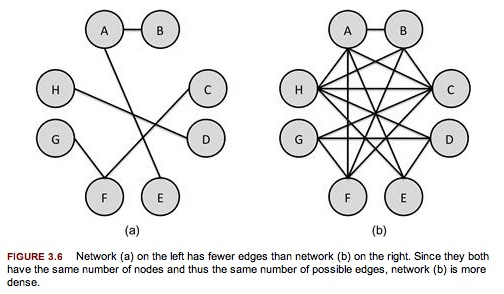
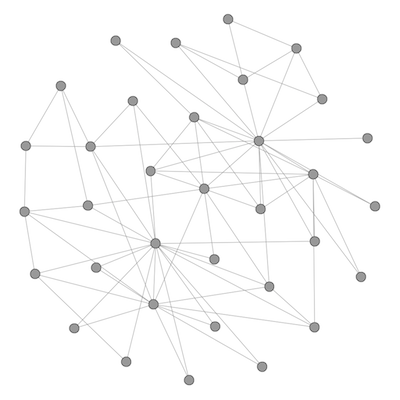

Open Project Management
13 February 2014
1. Basic Concepts of SNA
2. History of SNA
3. Measurements in SNA
4. Layouts in SNA
5. Dynamics in SNA
6. Tools
7. Examples
8. Bibliography
1. Basic Concepts of SNA
A city, a community
Source: https://maps.google.it/
A city, a community, a territory and its complexity
{kind=link}
Source: http://en.wikipedia.org/wiki/File:Barcelona_ISS009-E-9987.jpg
This complexity reduced in a map for navigation and design
{kind=link}
Source: http://commons.wikimedia.org/wiki/File:PlaCerda1859b.jpg
A community

Source: https://www.facebook.com/groups/fabberintialia/members/
A community and its map(s)
A community and its map(s)
A community and its map(s)
A community and its map(s)
A community and its map(s)
Network: the concept
a network is a set of relationships. More formally, a network contains a set of objects (in mathematical terms, nodes) and a mapping or description of relations between the objects or nodes. The simplest network contains two objects and one relationship that links them.
Source: Kadushin, Charles. Understanding Social Networks: Theories, Concepts, and Findings. New York: Oxford University Press, 2012.
Network types by analysis
- Ego-centric networks are those networks that are connected with a single node or individual.
- Socio-centric networks are networks in a “box.” Connections between children in a classroom or between executives or workers in an organization are closed system networks and the ones most often studied in terms of the fine points of network structure.
- Open system networks are networks in which the boundaries are not necessarily clear.
Source: Kadushin, Charles. Understanding Social Networks: Theories, Concepts, and Findings. New York: Oxford University Press, 2012.
Network structure: multiplexity
Social networks are also characterized by multiplexity—having more than one relationship among the social units. Networks can be “stacked” by creating matrixes of more than one relationship.
[...]
Networks can be partitioned because whole networks are often difficult to grasp and understand. One way to partition a network is to group people together who have similar relationships to other people.
Source: Kadushin, Charles. Understanding Social Networks: Theories, Concepts, and Findings. New York: Oxford University Press, 2012.
Network structure: Bipartite Graphs
Source: Golbeck, Jennifer. Analyzing the Social Web. 1 edition. Morgan Kaufmann, 2013.
Network structure: Bimodal or Multimodal Graphs
Other terms used to refer to these types of network are bimodal networks or multimodal networks. These terms describe networks with two or more types of nodes, respectively. When the networks connect people to organizations, it may be referred to as an affiliation network.
Source: Golbeck, Jennifer. Analyzing the Social Web. 1 edition. Morgan Kaufmann, 2013.
Directed graphs: possibile connections
- none at all (they are not connected)
- A relates to B
- B relates to A
- A and B both relate to one another
Source: Kadushin, Charles. Understanding Social Networks: Theories, Concepts, and Findings. New York: Oxford University Press, 2012.
Triads: 16 possible connections
Source: Kadushin, Charles. Understanding Social Networks: Theories, Concepts, and Findings. New York: Oxford University Press, 2012.
2. History of SNA
Euler and the bridges of Königsberg
Christakis: 3 degrees of influence
3. Measurements in SNA
Density: possible/existing edges
Density—the number of edges in the graph divided by the number of possible edges—is one of the most common ways of describing a network.
Density describes how connected a network is. More formally, it is a statistic comparing the number of edges that exist in a network to the number of edges that could possibly exist.
Source: Golbeck, Jennifer. Analyzing the Social Web. 1 edition. Morgan Kaufmann, 2013.
Density: possible/existing edges
Source: Golbeck, Jennifer. Analyzing the Social Web. 1 edition. Morgan Kaufmann, 2013.
Density: possible/existing edges
A network with no edges would have a density of 0 (because the numerator in our equation would be 0, regardless of how many nodes there are). On the other hand, the densest possible network would be a network where all possible edges exist—a clique. As we just learned, the number of possible edges is the denominator of the density formula. In a clique, then, the numerator and denominator will be the same, so the density will be 1. This illustrates that density is always between 0 and 1, where 0 is the lowest possible density and 1 is the highest.
Source: Golbeck, Jennifer. Analyzing the Social Web. 1 edition. Morgan Kaufmann, 2013.
Density: possible/existing edges
Density is at the heart of community, social support, and high visibility (when people in a network can see what others are doing and monitor and sanction their behavior). Density facilitates the transmission of ideas, rumors, and diseases. Other things being equal, the greater the density, the more likely is a network to be considered a cohesive community, a source of social support, and an effective transmitter.
Given the human limitation on the number of sustainable connections, smaller networks will have greater density.
Source: Golbeck, Jennifer. Analyzing the Social Web. 1 edition. Morgan Kaufmann, 2013.
Centrality: the importance of nodes
Centrality is one of the core principles of network analysis. It measures how “central” a node is in the network. This is used as an estimate of its importance in the network. However, depending on the application and point of view, what counts as “central” may vary depending on the context. Correspondingly, there are a number of ways to measure centrality of a node.
A node may appear highly central with one measure but have low centrality with another. That does not mean one measure is incorrect, though; they are simply different ways of describing nodes. The interpretation of the centrality measures is left to a human analyst.
Also, the measures below are calculated for undirected, unweighted graphs. When working with directed or weighted networks, these measures require modification. This has significant implications for how the values are interpreted.
Source: Golbeck, Jennifer. Analyzing the Social Web. 1 edition. Morgan Kaufmann, 2013.
Centrality: Degree
Many network properties describe how nodes are connected to one another and to the network as a whole. The simplest of these is degree. The degree of a node is the number of edges connected to that node. In undirected graphs, the degree of a node is simply the total number of edges connected to it. In directed graphs, there are two measures of degree: in-degree and out-degree. The in-degree is given by the number of edges coming into the node. In network diagrams, in-degrees are shown as edges with arrows pointing at the node. The out-degree is the number of edges originating from the node going outward to other nodes. These are shown with arrows pointing away from the node. The sum of the in-degree and out-degree gives you the total degree for the node.
Degree centrality is a good measure of the total connections a node has, but will not necessarily indicate the importance of a node in connecting others or how central it is to the main group.
Source: Golbeck, Jennifer. Analyzing the Social Web. 1 edition. Morgan Kaufmann, 2013.
Centrality: Degree
Centrality: Closeness
Closeness centrality indicates how close a node is to all other nodes in the network. It is calculated as the average of the shortest path length from the node to every other node in the network.
The benefits of closeness centrality are that it indicates nodes as more central if they are closer to most of the nodes in the graph. This strongly corresponds to visual centrality—a node that would appear toward the center of a graph when we draw it usually has a high closeness centrality.
Source: Golbeck, Jennifer. Analyzing the Social Web. 1 edition. Morgan Kaufmann, 2013.
Centrality: Closeness
Centrality: Betweenness
Betweenness centrality measures how important a node is to the shortest paths through the network. [...]It captures how important a node is in the flow of information from one part of the network to another.
In directed networks, betweenness can have several meanings. A user with high betweenness may be followed by many others who don’t follow the same people as the user. This would indicate that the user is well-followed. Alternatively, the user may have fewer followers, but connect them to many accounts that are otherwise distant. This would indicate that the user is a reader of many people. Understanding the direction of the edges for a node is important to understand the meaning of centrality.
Source: Golbeck, Jennifer. Analyzing the Social Web. 1 edition. Morgan Kaufmann, 2013.
Centrality: Betweenness
Centrality: Eigenvector
Eigenvector centrality measures a node’s importance while giving consideration to the importance of its neighbors. [...] It is sometimes used to measure a node’s influence in the network.
The main principle is that links from important nodes (as measured by degree centrality) are worth more than links from unimportant nodes.
Source: Golbeck, Jennifer. Analyzing the Social Web. 1 edition. Morgan Kaufmann, 2013.
Centrality: Eigenvector
Centrality: Eccentricity
The eccentricity measure captures the distance between a node and the node that is furthest from it; so a high eccentricity means that the furthest away node in the network is a long way away, and a low eccentricity means that the furthest away node is actually quite close.
Centrality: Eccentricity

Centrality measures: an example
{kind=link}
Another measure: Modularity
Add more qualitative tools
4. Layouts in SNA
Layouts: random algorithms
Note that many of these algorithms have some random features in them. They start with the nodes randomly placed and iteratively move them around into better positions. As a result, running the algorithm multiple times will produce graphs that look different. They will often be similar but may be positioned differently. Also, each iteration helps to improve the layout.
Source: Golbeck, Jennifer. Analyzing the Social Web. 1 edition. Morgan Kaufmann, 2013.
Gephi Layout: Random
Gephi Layout: Circular

Gephi Layout: Dual Circle

Gephi Layout: Concentric
Gephi Layout: Force Atlas
Gephi Layout: Force Atlas 2
Gephi Layout: Fruchterman Reingold
Gephi Layout: OpenOrd
Gephi Layout: Radial Axis
Gephi Layout: Yfan Hu
Gephi Layouts
5. Dynamics in SNA
Networks dynamics: psychological motivations
- getting things done < effectiveness drive (focus on holes)
- community and social support < safety drive (focus on density)
Source: Kadushin, Charles. Understanding Social Networks: Theories, Concepts, and Findings. New York: Oxford University Press, 2012.
Network dynamics: the effective person
The effective person does not want to be close to everyone, but only to some; other persons are pushed away or ignored. The effective person is not necessarily “nice.” She seeks control and profit rather than affiliation and equal exchange. Competition is a network aspect of effectiveness.
Network theory further suggests that one competes with or tries to beat or at least keep up with those who are structurally isomorphic. Persons are structurally isomorphic if they have the same pattern of relations with other nodes—though not necessarily the same nodes, not necessarily connected.
Source: Kadushin, Charles. Understanding Social Networks: Theories, Concepts, and Findings. New York: Oxford University Press, 2012.
Core/periphery structure
Core/periphery structures are the simplest forms of network segmentation.
Cores possess whatever attributes are most valued by the network. The network is about relationships and flows, not about the attributes of the nodes. This proposition says that in core/periphery structures the valuation of the attributes is related to the structure.
Source: Kadushin, Charles. Understanding Social Networks: Theories, Concepts, and Findings. New York: Oxford University Press, 2012.
Network dynamics: trust
The main difference between effectiveness networks and safety networks as ideal types is the location of trust. In safety networks, trust tends to be an attribute of the entire network, not just of the “player’s” side. In effectiveness networks, trust is present only to a limited degree between the player and the other who is the object of play.
Source: Kadushin, Charles. Understanding Social Networks: Theories, Concepts, and Findings. New York: Oxford University Press, 2012.
Leaders in a social network
- embody more of the norms of the group than the followers
- tend more often to initiate interaction with members either directly or through others
- are those who are chosen more often by others as a result of the activity, interaction, and sentiment feedback loops
- are a better match with the tacit standards or “norms” of the group than others in the group possess
- are those who enjoy and tolerate greater asymmetry in their choices than others
Source: Kadushin, Charles. Understanding Social Networks: Theories, Concepts, and Findings. New York: Oxford University Press, 2012.
Size of a social network: Dunbar's number
One’s network size, either in terms of outreach or making connections within one’s immediate social environment, is bounded by human cognitive abilities. The average person historically has had a maximum effective network size of about 150, but that size appears to have doubled in current Western countries such as the United States.
Source: Kadushin, Charles. Understanding Social Networks: Theories, Concepts, and Findings. New York: Oxford University Press, 2012.
Homophily: definition
More formally, if two people have characteristics that match in a proportion greater than expected in the population from which they are drawn or the network of which they are a part, then they are more likely to be connected. The converse is also true: if two people are connected, then they are more likely to have common characteristics or attributes. [...] Homophily is a process as well an outcome.
Source: Kadushin, Charles. Understanding Social Networks: Theories, Concepts, and Findings. New York: Oxford University Press, 2012.
Homophily: causes
- the same kinds of people come together
- people influence one another and in the process become alike
- people can end up in the same place
- and once they are in the same place, the very place influences them to become alike
Source: Kadushin, Charles. Understanding Social Networks: Theories, Concepts, and Findings. New York: Oxford University Press, 2012.
Importance of weak ties
- weak ties facilitate the flow of information from otherwise-distant parts of a network. Individuals with few weak ties will be deprived of information from the distant parts of the social system and will be confined to the provincial news and views of their close friends
- weak ties help to integrate social systems. The macroscopic side of this communication argument is that social systems lacking in weak ties will be fragmented and incoherent
Source: Kadushin, Charles. Understanding Social Networks: Theories, Concepts, and Findings. New York: Oxford University Press, 2012.
Network: the concept
Source: Kadushin, Charles. Understanding Social Networks: Theories, Concepts, and Findings. New York: Oxford University Press, 2012.
Network: the concept
Source: Kadushin, Charles. Understanding Social Networks: Theories, Concepts, and Findings. New York: Oxford University Press, 2012.
Network: the concept
Source: Kadushin, Charles. Understanding Social Networks: Theories, Concepts, and Findings. New York: Oxford University Press, 2012.
Network: the concept
Source: Kadushin, Charles. Understanding Social Networks: Theories, Concepts, and Findings. New York: Oxford University Press, 2012.
6. Tools
Software: choose the right file format
Software: choose the right file format
Software: choose the right tools
Software: Gephi
Introducing Gephi 0.7 from gephi on Vimeo.
Source: http://vimeo.com/9726202#embed
Software: Gephi Toolkit
Source: https://gephi.org/toolkit/
Software: Gephi Toolkit in Processing
Software: NetworkX (Python)
Source: http://networkx.github.io/
Software: NetworkX (Python, R, Ruby...)
Source: http://igraph.sourceforge.net/
Software: graph-tool (Python)

Source: http://graph-tool.skewed.de/
Centrality in Software libraries: NetworkX
- Degree
- Closeness
- Betweenness
- Current Flow Closeness
- Current-Flow Betweenness
- Eigenvector
- Communicability
- Load
- ... + other measures
Centrality in Software libraries: graph-tool
- Degree
- Closeness
- Betweenness
- Central Point Dominance
- Pagerank
- Eigenvector
- Katz
- Hits
- Eigentrust
- Trust Transitivity
- ... + other measures
Source: http://graph-tool.skewed.de/static/doc/centrality.html
Centrality in Software libraries: Gephi
- Degree
- Degree Power Law
- Closeness
- Connected components
- Betweenness
- Eccentricity
- Pagerank
- Eigenvector
- Hits
- ... + other measures
Software: sigma.js (Javascript)
Source: http://sigmajs.org/
Software: gexf-js (Javascript)
Source: https://github.com/raphv/gexf-js - https://marketplace.gephi.org/plugin/gexf-js-web-viewer/
7. Examples
The structure of adolescent romantic and sexual networks
Community Structure in Jazz
Mapping the Political Blogosphere and the 2004 U.S. Election
Source: http://www.visualcomplexity.com/vc/project_details.cfm?id=227&index=6&domain=Political%20Networks
Theyrule.net
Source: http://www.theyrule.net/
Exxonsecrets.org
Source: http://www.exxonsecrets.org/
Visual Complexity: a repository
Sociometric badges
Source: http://hd.media.mit.edu/badges/
Sociometric badges
Sociopatterns: Face-to-face interactions
Source: http://www.sociopatterns.org/
Sociopatterns: Face-to-face interactions
Source: http://www.sociopatterns.org/
Sociopatterns: OpenBeacon
Source: http://www.openbeacon.org/
Sociopatterns: OpenBeacon
Source: http://www.openbeacon.org/
6. Bibliography
Buchanan: Nexus
Source: Buchanan, Mark. Nexus: Small Worlds and the Groundbreaking Theory of Networks. W. W. Norton & Company, 2003.
Barabasi: Linked
Source: Barabasi, Albert-Laszlo. Linked: How Everything Is Connected to Everything Else and What It Means. Plume, 2003.
Watts: Six Degrees
Source: Watts, Duncan J. Six Degrees: The Science of a Connected Age. W. W. Norton & Company, 2004.
Hanneman - Riddle: Introduction to social network methods
Source: Hanneman, Robert A., and Mark Riddle. Introduction to Social Network Methods. Edited by Robert A. Hanneman and Mark Riddle. Riverside, CA: University of California, Riverside, 2005. http://www.faculty.ucr.edu/ hanneman/.
Golbeck: Analyzing the Social Web
Source: Golbeck, Jennifer. Analyzing the Social Web. 1 edition. Morgan Kaufmann, 2013.
Kadushin: Understanding Social Networks
Source: Kadushin, Charles. Understanding Social Networks: Theories, Concepts, and Findings. New York: Oxford University Press, 2012.
Giuffre: Communities and Networks
Source: Giuffre, Katherine. Communities and Networks: Using Social Network Analysis to Rethink Urban and Community Studies. 1 edition. Polity, 2013.
Pentland: Honest Signals
Source: Pentland, Alex. Honest Signals: How They Shape Our World. First Edition. The MIT Press, 2008.
Lima: Visual Complexity
Source: Lima, Manuel. Visual Complexity: Mapping Patterns of Information. Princeton Architectural Press, 2011.
Tsvetovat: Social Network Analysis for Startups
Source: Tsvetovat, Maksim, and Alexander Kouznetsov. Social Network Analysis for Startups: Finding Connections on the Social Web. O’Reilly Media, 2011.
Russell: Mining the social web
Source: Russell, Matthew A. Mining the Social Web: Data Mining Facebook, Twitter, LinkedIn, Google+, GitHub, and More. 2 edition. O’Reilly Media, 2013.
Thank you!
Massimo Menichinelli / info@openp2pdesign.org / @openp2pdesign

This work is licensed under a Creative Commons Attribution 3.0 Unported License.
Massimo Menichinelli - 2013
openp2pdesign.org